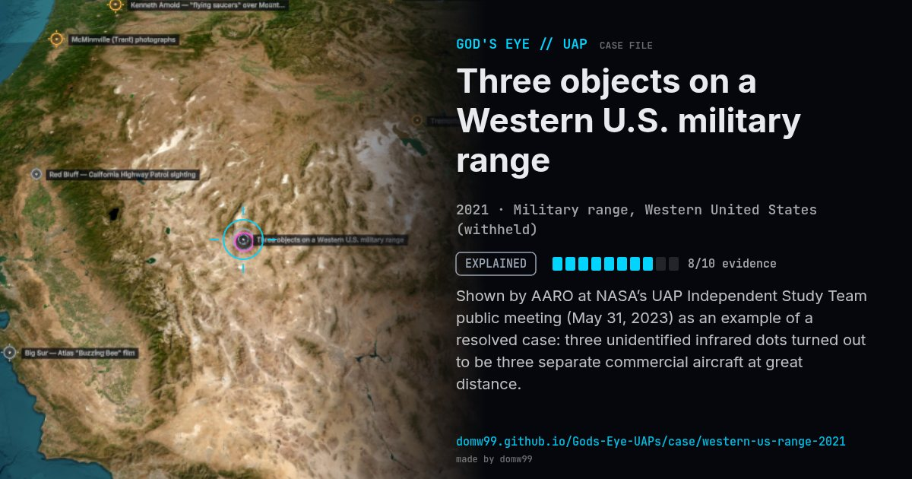

Three objects on a Western U.S. military range
EXPLAINED

Shown by AARO at NASA’s UAP Independent Study Team public meeting (May 31, 2023) as an example of a resolved case: three unidentified infrared dots turned out to be three separate commercial aircraft at great distance.
Explanation
AARO matched the three dots to commercial airliners far from the infrared sensor using flight and radar data.
What was seen
Shape: Three small dots on infrared
Witnesses: Range sensor operators
Duration: ~4 minutes of video